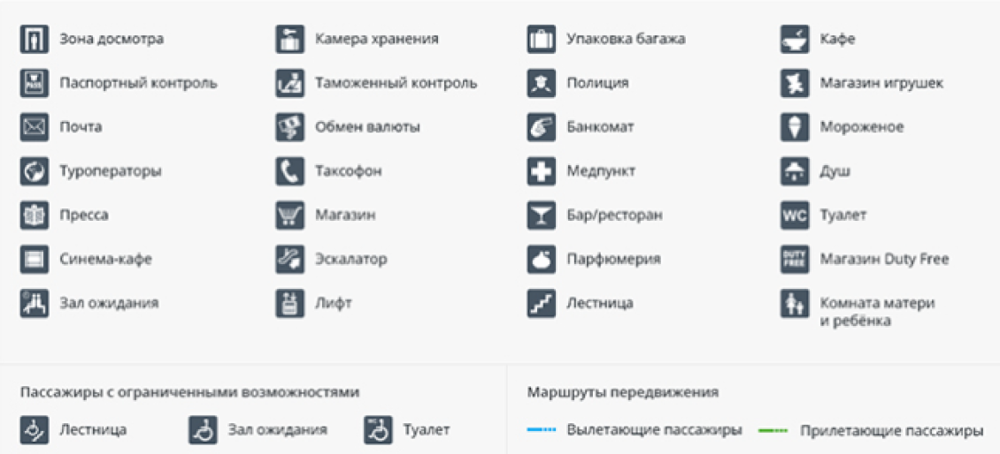
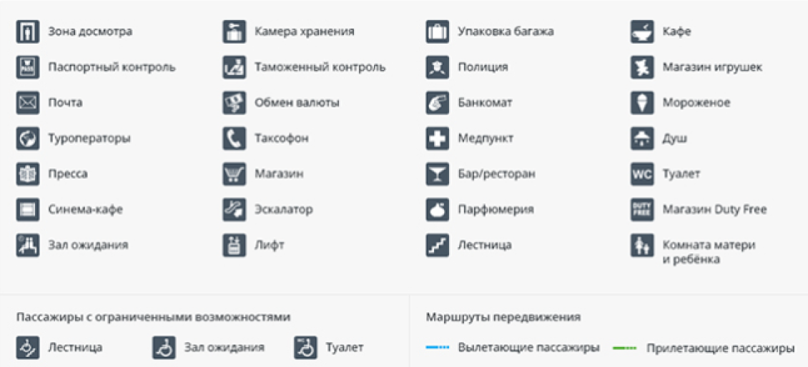

FlyWay - это современный и комфортабельный аэропорт, обеспечивающий высококачественное обслуживание пассажиров. Мы гордимся своей репутацией надежного и безопасного аэропорта, предлагающего широкий спектр услуг и удобств для всех путешественников.Расположенный в прекрасном месте, наш аэропорт обладает удобным доступом из города и из других регионов. Мы предлагаем различные варианты транспорта, включая автобусные маршруты, такси и собственные парковки для автомобилей. Вы легко найдете нас и сможете быстро добраться к месту назначения.
Как добраться в аэропорт Чита
До международного аэропорта можно добраться на автомобиле, на общественном транспорте или заказать таксиНа общественном транспорте
До терминала аэропорта можно добраться на маршрутном такси №14 и №12. Отправление с остановки «Железнодорожный вокзал».
Комната матери и ребенка
На территории терминала находится комната матери и ребёнка для кратковременного пребывания (до 3-4 часов) и обслуживания пассажиров с детьми до 7 лет (при наличии свободных мест — до 8 лет), детей-инвалидов до 14 лет, женщин на второй половине беременности. Плата за пребывание в комнате матери и ребёнка не взимается. Режим работы комнаты матери и ребёнка — круглосуточно.Парковка в аэропорту
Бесплатная парковкаБесплатная парковка расположена в 300 м от Терминала «А».
Краткосрочная парковка
Краткосрочная парковка Р1 расположена на привокзальной площади аэропорта.
Адрес, справочная и контакты
Адрес: 672018, Забайкальский край, Чита, ул.Звездная 17, Международный аэропорт Чита (Кадала). Официальный сайт: aerochita.ruКод ИАТА (IATA): HTAКод ИКАО (ICAO): UIAA
Телефон: +7 (3022) 338-444
Комната матери и ребенка: +7 (3022) 338-444
VIP-зал: +7 (3022) 338-444
Мед.пункт: +7 (3022) 33-84-03
Упаковка багажа: +7 (3022) 338-444
Камера хранения: +7 (3022) 338-444
Розыск багажа: +7 (3022) 338-452
Парковка: +7 924 575-07-17

 


 flyway00@mail.ru
flyway00@mail.ru